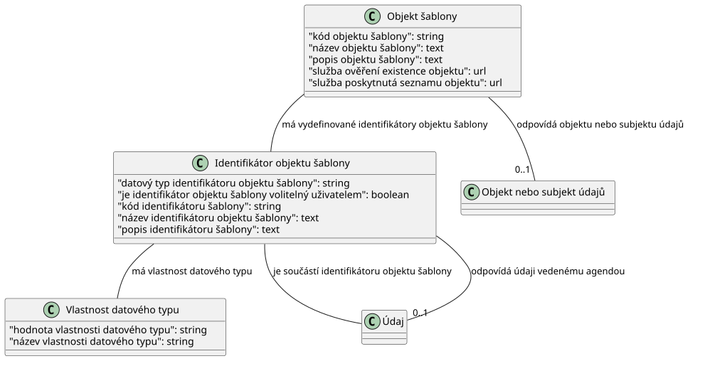

Tento dokument je otevřenou formální normou ve smyslu § 3a odst. 3 zákona č. 106/1999 Sb., o svobodném přístupu k informacím, pro zveřejňování informací o oprávnění k zastupování z Registru práv a povinností ve smyslu § 52 zákona č. 111/2009 Sb. o základních registrech v podobě otevřených dat.
Otevřená data dle této otevřené formální normy jsou publikována ve formátu JSON-LD, se kterým lze pracovat standardními softwarovými prostředky pro práci s formátem JSON. Formát JSON-LD navíc umožňuje přímou interpretaci dat v podobě datového modelu RDF.
Tento dokument byl vygenerován automaticky nástrojem Dataspecer.
| Artefakt | Odkaz |
|---|---|
| JSON schéma | ./objekt-šablony_schema.json |
| JSON-LD kontext | ./objekt-šablony.jsonld |
| PlantUML diagram | ./konceptuální-model.plantuml |
| Konceptuální diagram | ./konceptuální-model.svg |
| Dokumentace | ./ |

Datová struktura pro Objekt šablony. Předpis omezení na objekt oprávnění
JSON Schéma zachycující strukturu pro Objekt šablony je definováno v souboru ./objekt-šablony_schema.json. Datová sada je tvořena seznamem prvků odpovídajících datové struktuře Objekt šablony. Prvky jsou uvedeny v poli `položky`.
kód-objektu-šablony:
povinná
(1 - 1) položka typu
Řetězec dle regulárního výrazu ^O-[0-9]+$
název-objektu-šablony:
povinná
(1 - 1) položka typu
Text
popis-objektu-šablony:
nepovinná
(0 - 1) položka typu
Text
služba-ověření-existence-objektu:
nepovinná
(0 - 1) položka typu
URI, IRI, URL
služba-poskytnutá-seznamu-objektu:
nepovinná
(0 - 1) položka typu
URI, IRI, URL
identifikátor-objektu-šablony:
nepovinná
(0 - ∞) položka typu
Identifikátor objektu šablony
objekt-subjekt:
nepovinná
(0 - 1) položka typu
IRI (Objekt nebo subjekt údajů)
datový-typ-identifikátoru-objektu-šablony:
nepovinná
(0 - 1) položka typu
Řetězec dle regulárního výrazu ^datový-typ/xs:[a-zA-Z]+$
je-identifikátor-objektu-šablony-volitelný-uživatelem:
nepovinná
(0 - 1) položka typu
Booleovská hodnota - Ano či ne
kód-identifikátoru-šablony:
povinná
(1 - 1) položka typu
Řetězec dle regulárního výrazu ^OI-[0-9]+$
název-identifikátoru-objektu-šablony:
povinná
(1 - 1) položka typu
Text
popis-identifikátoru-šablony:
nepovinná
(0 - 1) položka typu
Text
vlastnost-datového-typu:
nepovinná
(0 - ∞) položka typu
Vlastnost datového typu
odpovídá-údaji-vedenému-agendou:
nepovinná
(0 - 1) položka typu
IRI (Údaj)
kód-objektu-šablony^O-[0-9]+$název-objektu-šablonypopis-objektu-šablonyslužba-ověření-existence-objektuslužba-poskytnutá-seznamu-objektuidentifikátor-objektu-šablonyobjekt-subjektdatový-typ-identifikátoru-objektu-šablony^datový-typ/xs:[a-zA-Z]+$je-identifikátor-objektu-šablony-volitelný-uživatelemkód-identifikátoru-šablony^OI-[0-9]+$název-identifikátoru-objektu-šablonypopis-identifikátoru-šablonyvlastnost-datového-typuodpovídá-údaji-vedenému-agendouhodnota-vlastnosti-datového-typunázev-vlastnosti-datového-typu^vlastnost/[a-zA-Z-_]+${kind=link}